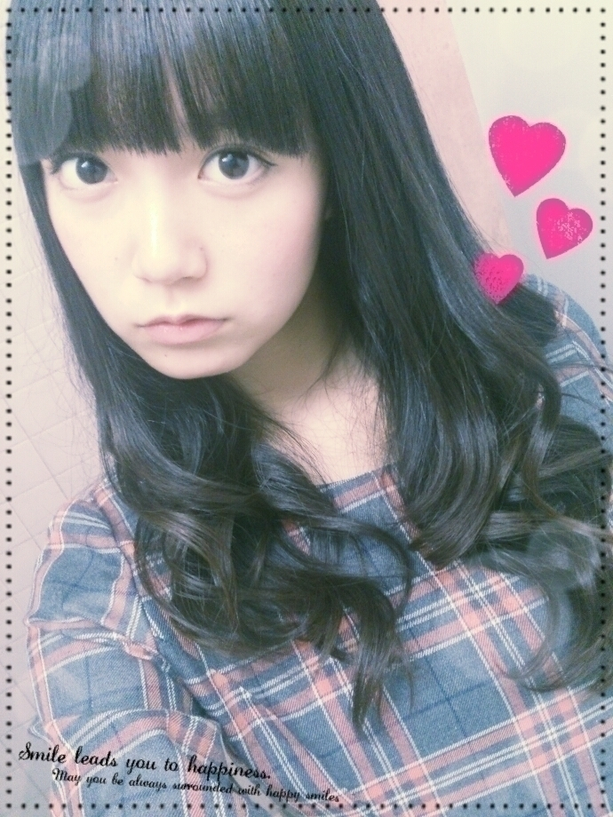
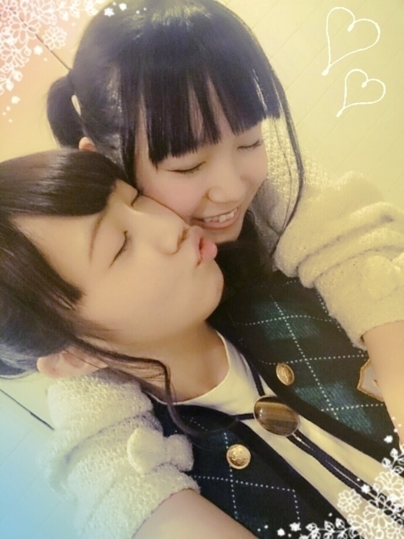

| 2014/11 04 Tue | ひめたん-OoO-その494 |
日曜日は個別握手会
月曜日は全国握手会でした！
来てくれたみなさん
ありがとうございました(＊´ω`＊)
お留守番ちーむさんレポするよ～
個別握手会
1部＊巻きおろし
2部＊なんかまとめてもらうやつ

3部＊サイドポニー
4部＊ハーフツイン

2部、この表記じゃ
伝わる気がしない(笑)
今回はいろんなヘアに
挑戦してみたけど
どれも好評で嬉しかった～＊
なんなら
僕は私はいつものツインより
こっちのが好きだわとも言われた←←
みんなは何がお好き？
余談だけど巻きおろしをしたら
陽菜ちゃんとまいまいが褒めてくれて
挙げ句の果てに
もうそろそろツイン辞めたら？って
真剣に言われる始末(´-ω-`)
いつもツインしてる私とのギャップが
そうさせてるとひめは思うんだけど
どうなんでしょうね～
今回はおねぼうさんが少なくて
朝からたくさんのひとが
会いに来てくれた♡
ぼーいずは
パーカー × Gジャン多かったけど
もしかしてELO見てくれたのかな？
おにゃのこはあいかわらず
ついんにりぼん
らぶりーでかわいかったよ⌒ﾟ( ･･ )ﾟ⌒
そして全握は
らりんとペアでした！
らりん一家のみなさんも
きゅんきゅん王国のみんなも
来てくれてありがとう(＊´ω`＊)
らりんとふたりの
元気いっぱいにぎやかレーン\❁/
はじめましての方も
たくさんいらっしゃって
全握は新しい出会いがいいよね！
めーるも乗っとりましたー(笑)
またいつか登場しようと思います☆
らりんありがとう！

そういえばこの前の金曜日
ラジオ終わりのらりんをピックアップする車に
ひめたん乗ってたんだけど
たくさんの方が会いに来てて
らりん一家すてきね(；ω；)
らりんいつも喜んでるよ♡♡
ということでこの3連休は
たくさんの方に会えて
充実してたなあ～
今日のお仕事はまだ言わないけど
きっとみなさん
喜んでくださると思う(ノ)･ω･(ヾ)
そしてサプライズ発表
アンダーライブ2nd Season Final
Merry X'mas Show 2014
乃木坂46 1st アルバム
詳しくは公式サイトを見てください！
3dayとも有明コロシアム
来てくださったみなさんのおかげで
さらに大きな会場で
やらせていただけることになりました。
みなさんの期待に応えられるよう
精一杯頑張るので
ぜひ遊びに来てください！
アンダーライブは
会場が狭い故の一体感がいいと
よく言われてきましたが
有明コロシアムでも
会場全体で一つになりましょう\( ˆoˆ )/
最後に
NOGIBINGO!3 #5は
みなさん観てくれたカナ？←
かなりんの妄想に出てくる
アイドル役になって
友情出演させていただきました♡♡
かなりんぺろぺろ～

 ひめたんは、アイドルじゃなかったら
ひめたんは、アイドルじゃなかったら
何をしてたと思う？？
想像することはたまにありますよ～
逆に幼い頃の私からすると
今こうして活動してることが
不思議だと思う。
ひめたんは
ヘアアレンジは得意ですか〜？？
ツイン、ハーフアップ、ハーフツイン
しかできない
まず髪巻けない(´-ω-`)
モ
バメの返信って、ブログか755
どっちがいいかな？
確実に目に止まるのは日記。
だから番組や握手会の感想や質問なんかは
日記に書いてほしいです～
755では気楽に呟いてね！
ひめたんの文章は
ストレートに 心に響く。なんで？w
書いてる私の心が澄んでるから(真顔)
ひめたんはお風呂入りながら
何かする人ですか？？
長居したい時は
スマホを持ち込みます\( ˆoˆ )/
ひめたんの日記の
コメント欄下２ケタに46を踏んだ方へ
手書きでコメ返するコーナー
＼ ひめたん46 ／

いつもたくさんのコメント
ありがとうございます
今めーるで
ちょっと企画を募集しているんだけど
そちらも協力ありがとうね( ^o^ )
早稲田祭の感想や握手会の感想
他にもたくさん～ぱやぱや～
(＊´・ω・＊)
コメント(793)
2014/11/04 23:54